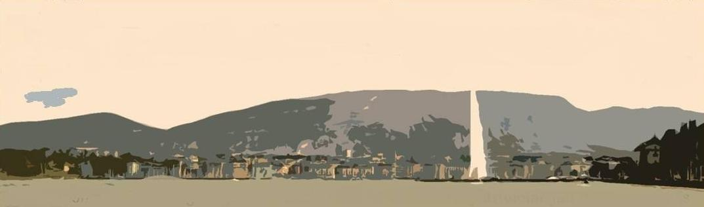

Welcome • Bienvenue • Benvenidos
Jeden Sonntag treffen wir uns um 10:00 Uhr an der Endhaltestelle der Buslinie 8 in Veyrier-Douane, 100 Meter von der Grenze auf der Schweizer Seite. Aufbruch zu Fuss um Punkt 10:00. Ein Verantwortlicher des Genfer Vereins Association Genevoise des Amis du Salève (AGAS) erwartet euch dort bei jedem Wetter. Anmeldung nicht erforderlich. Gute Wanderschuhe, im Winter Steigeisen, im Sommer Kopfbedeckung und Sonnencreme, ein oder zwei Stöcke, Regenkleidung, Pass, Geld, Picknick und Getränke sowie eine gute körperliche Verfassung sind Voraussetzung.
Je nach Anzahl der anwesenden freiwilligen Guides können mehrere Routen vorgeschlagen werden. Je nach gewählter Route dauert die Wanderung 5 bis 8 Stunden, davon 3 Stunden bergauf im stetigen Rhythmus (800 Meter Höhenunterschied).
Manchmal organisieren wir eine zusätzliche Wanderung am gleichen Tag, um den Süden des Salève zu erkunden. Diese Wanderungen sind oft länger und fernab von der Seilbahn, daher den sportlichen Wanderern vorbehalten. Sie werden ein bis zwei Tage im Voraus hier angekündigt.
Man braucht unbedingt eine gute körperliche Verfassung und gutes Schuhwerk
(keine Barfußschuhe, Flip-Flops usw.!). Der Salève ist ein echter Berg, und Vorsicht ist geboten.
Nehmt auch ausreichend Wasser mit, da es entlang der Wanderwege auf dem Salève kein Trinkwasser gibt.